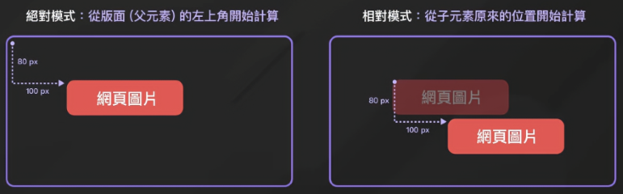

Basics
- CSS tells the browser how to display your webpage.
You can use CSS to set the color, font, size, and other aspects of HTML elements. - You have three methods for applying CSS.
1.You can directly add style within the HTML code.
2.You can add style within the head section of the HTML.
3.You're best to put all the styles in a separate file and link to it.
Created a separate style.css file and switched the editor view to that file. - You can add style to an element by specifying it in the style element and setting a property.
For example, you can center your h1 element by setting its text-align property to the value center. - You can add the same group of styles to many elements by creating a list of selectors.
Each selector is separated with commas. - You need to link the styles.css file in the HTML, so the styles will be applied.
Nest a self-closing link element in the head element.
Give it a rel attribute value stylesheet and an href attribute value of style.css. - The 'rel' attribute specifies the relationship of the linked resource, and in this case, 'rel="stylesheet"' indicates that the linked resource is a style sheet file.
This informs the browser that the file is a style sheet and needs to be applied to the document.
However, the 'rel' attribute is not limited to just 'stylesheet'. It can be used to define different types of relationships. For example: - rel="stylesheet"：The linked resource is a style sheet file.
- rel="icon"：Specifies the website's icon.
- rel="preconnect"：Specifies pre-connecting resources.
- rel="alternate"：Specifies alternate versions of resources, such as alternate language versions or documents.
- You can use the id selector to target a specific element with an id attribute.
An id selector is defined by placing the hash symbol # directly in front of the element's id value. - A class selector is defined by a name with a dot directly in front of it.
- Comments in CSS look like this: /* comment here */
CSS屬性介紹
Unit/Value
- color/height/width/position：顏色/高度/寬度/位置
- top/bottom/left/right：與上下左右邊的距離
- px：像素(pixels)
- vw/vh：視窗的百分之幾，vw為左右即寬度，vh為上下即高度
For example: Change the width property's value to be 80%, to make it 80% the width of its parent element. - border：邊角
- radius：圓角效果
線條樣式
- solid：直線
- dashed：虛線
- dotted：圓點

CSS盒子模型 (Box Model)
- padding：會在元素的內側添加空間，影響元素內容與元素邊框之間的距離。
- border：用來定義元素邊框的屬性，它可以用來設置元素的邊框寬度、樣式和顏色。
- margin：會在元素的外側添加空間，影響元素與其他元素之間的距離。

Font setting
- font-family：字體
sans-serif is a fairly common font that is very readable.
You can add a fallback value for the font-family by adding another font name separated by a comma.
Fallbacks are used in instances where the initial is not found/available. - font-style：字體樣式
- normal：default
- italic：斜體字
- oblique：與 italic 類似，將文字傾斜顯示，但是沒有為斜體設計的字體時會採用這種方式，效果可能略有差異。
- font-size：字體大小
Background setting
- background-color/size/position：背景顏色/大小/位置
- background-image:URL(網址)：引用圖片為背景
- background-repeat：背景重複與非重複設置
圖片size調整

Typography
- display：用來定義 HTML 元素的顯示方式。
- block：block：元素呈現為區塊級元素，它會新起一行並且盡可能撐滿其父元素的寬度，可以設定寬度、高度、外邊距和內邊距。
- inline：元素呈現為內聯元素，它不會產生換行，只佔據它實際內容的大小，不可設定寬度和高度，水平方向上的外邊距和內邊距會起作用，垂直方向上的外邊距和 內邊距則不會。
- inline-block：元素呈現為內聯塊元素，它不會新起一行，但可以設定寬度、高度、外邊距和內邊距。
- flex：元素將以彈性盒模型顯示，可用於建立靈活的佈局。
- grid：元素將以網格佈局顯示，用於建立複雜的二維佈局。
- none：元素將不會被顯示，完全不佔據頁面的空間。
- table：元素將呈現為表格元素，可透過 table-row、table-cell 等屬性來控製表格佈局。
- inline-table：元素呈現為內嵌表格元素，類似 table，但不會新起一行。
- list-item：元素呈現為清單項，通常與 list-style 屬性一起使用，用於清單樣式的設定。
- inherit：繼承父元素的 display 屬性。
Position佈局
- Position:absolute：絕對位置，從版面(父元素)的左上角開始計算
- Position:relative：相對位置，從子元素原來的位置開始計算 
- Position:fixed：可以讓區塊固定在指定位置，意思是不論頁面多長，就算把捲軸拉到最底下，被設置為 fixed 的區塊還是會在頁面上相同位置。
- Position:sticky：這個屬性和 fixed 非常像，差別在於 sticky 會佔住原本版面的空間。
fixed 的區塊會被固定在指定位置，並且覆蓋網頁中內容，但是 sticky 會讓原本網頁的內容推到下面，不會讓 sticky 擋住原有的文字。 - text-indaent：用於設置段落或塊級元素的文本內縮（即段首縮進）。
這個屬性控制文本第一行與其餘行的水平間距，可以將文本的第一行移動到其餘文本之外。
當子元素在使用 absolute 進行定位時，父元素本身也要有 position:relative 這行語法。
注意：需設定 top, left, right 或 bottom，這樣才能在捲動後固定在指定的位置
Flexbox 排版
- display:flex：可以讓子元素產生各種排列方式
- flex-direction:colume：指定flex方向為縱向排列
- justify-content:center：水平置中
- justify-content:space-between：伸展到父元素的兩側
- justify-content:space-evenly：均分子元素以外的空隙
- align-items:center：垂直置中
- text-align：文字對齊位置，如left靠左、center置中等。
注意：此時裡面的子元素會變成橫向排列


偽選擇器 (pseudo-selector)
- a:hover：Modifying the properties that change when the mouse hovers over the link.
- a:active：Setting the properties that change when a link has been clicked.
- a:visited：Setting the properties that change when a link has been visited.
cursor語法說明
cursor 屬性用於指定當鼠標指針位於指定元素上時所顯示的游標類型。
這個屬性可以用於改變游標的樣式，以提供與用戶交互時的視覺反饋。
以下是一些常見的 cursor 屬性值及其對應的游標類型：
- auto：瀏覽器自動選擇適合的游標類型。
- pointer：顯示為手指，表示可以點擊的連結或可交互元素。
- default：默認的游標類型，通常是箭頭。
- move：顯示為四方向的箭頭，表示可移動的元素。
- text：顯示為I形的游標，表示可以輸入文本的區域。
- wait：顯示為等待的圈圈，表示用戶應該等待操作完成。
- crosshair：顯示為十字線，用於表明用戶可以進行選擇或測量操作。
- not-allowed：顯示為圓圈加斜線，表示操作不被允許。
How to select color on the website
and the subtractive CMYK (cyan, magenta, yellow, black) model used in print.
Application
you want to center the #menu horizontally.
- You can do this by setting its margin-left and margin-right properties to auto.
Think of the margin as invisible space around an element.
Using these two margin properties, center the #menu element within the body element.
If you want to align the items on the menu to the left and the prices to the right.
- In the class name for items, use the 'text-align' property set to 'left', and in the class name for prices, use the 'text-align' property set to 'right'.
- That is kind of what you want, but now it would be nice if the flavor and price were on the same line.
p elements are block-level elements, so they take up the entire width of their parent element.
To get them on the same line, you need to apply some styling to the p elements so they behave more like inline elements. - Start by adding a class attribute with the value [item] to the first [article] element in the HTML.
- The p elements are nested in an [article] element with the class attribute of [item].
You can style all the p elements nested anywhere in elements with a class named item. - Using the above selector, add a 'display' property with value 'inline-block' so the p elements behave more like inline elements.
- That's closer, but the price didn't stay over on the right.
This is because inline-block elements only take up the width of their content.
To spread them out, add a width property to the [items] and [price] class selectors that have a value of 50% each. - Styling the p elements as inline-block and placing them on separate lines in the code creates an extra space to the right of the first p element, causing the second one to shift to the next line.
One way to fix this is to make each p element's width a little less than 50%. - That worked, but there is still a little space on the right of the [price].
You could keep trying various percentages for the widths.
Instead, use the back space key on your keyboard to move the p element with the class [price] next to the p element with the class [items] so that they are on the same line in the editor.
Make sure there is no space between them. - Now go ahead and change both the [items] and [price] class' widths to be 50% again.
- Since you know the prices on the right have significantly fewer characters, change the [items] class width value to be 75% and the [price] class width value to be 25%.
- On a very wide screen, the [coffee] and [dessert] appear far apart from their prices.
You can add a 'max-width' property to the [menu] class with a value of [500px] to prevent it from growing too wide.
If you make the width of the page preview smaller, you will notice at some point, some of the text on the left starts wrapping around to the next line.
This is because the width of the p elements on the left side can only take up 50% of the space.
範例
範例1，nav是選擇器（selector）：一種用於選擇 HTML 元素的模式或規則。
它們告訴瀏覽器應該將哪些樣式應用到文檔的哪些元素上。
選擇器可以包含元素名稱、類名、ID、屬性等不同類型的標識符。
ul是後代選擇器（descendant selector）：用於選擇某個元素的後代元素。
它使用空格（或其他適當的子選擇器）將兩個或多個選擇器連接在一起。
後代選擇器將匹配所有符合第二個選擇器的元素，並且它們是前一個選擇器的後代。
範例2，在 CSS 中，星號 * 是一個通用選擇器，表示選擇文檔中的所有元素。
這意味著 * 將匹配 HTML 文件中的每個元素，並且可以應用相同的樣式設置。
在下圖 CSS 代碼中，* 被用來設置所有元素的內邊距和外邊距為零，
這樣做可以清除不同瀏覽器之間可能存在的默認樣式，使得元素之間的間距更加一致。

當四個邊需要不同間距時，可依據下方圖示的順序設置不同邊的間距